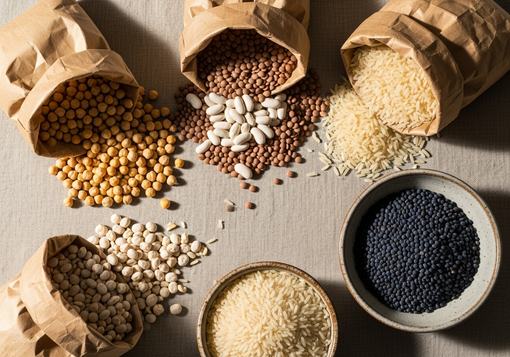

Familia, autenticidad y calidad natural. Eso es Don José.
Productos Don José nació con una convicción sencilla: que la buena comida no tiene por qué ser complicada ni cara. Desde el primer día, seleccionamos cada legumbre y cada arroz con el mismo cuidado que pondríamos en nuestra propia mesa.
Empezó como un proyecto familiar nacido de la tradición agrícola de generaciones, y se ha convertido en una marca de referencia para miles de hogares que buscan calidad real, sin artificios. Producto limpio, bien envasado, a un precio justo.
Hoy, con las mismas ganas del primer día, seguimos trabajando para que Don José sea la opción natural en cada cocina.

Los valores que guían cada decisión que tomamos.
Productos sin aditivos artificiales. Lo que ves es lo que comes. Desde el primer día seleccionamos nuestros productos, tal y como los da la tierra.
Selección rigurosa de cada grano. Controlamos el proceso desde el campo hasta el envase para garantizar un producto que cumpla nuestras exigencias.
Somos una empresa familiar. Tratamos a cada cliente como si nos comprara directamente a nosotros. Cercanos, directos y de confianza.
Calidad no tiene por qué significar caro. En Don José creemos en hacer accesible la buena alimentación a todas las familias.
Llevamos años siendo la elección de miles de familias. Esa confianza nos obliga cada día a dar lo mejor de nosotros.
El producto bien envasado no es un lujo, es un respeto. Nuestros envases son limpios, claros y diseñados para el consumidor actual.
Nuestra misión
"Llevar a cada mesa española productos de calidad real, bien presentados y a un precio accesible, contribuyendo a una alimentación más sana y consciente."
— Productos Don José
Explora la gama completa. Desde el primer día seleccionamos nuestros productos.